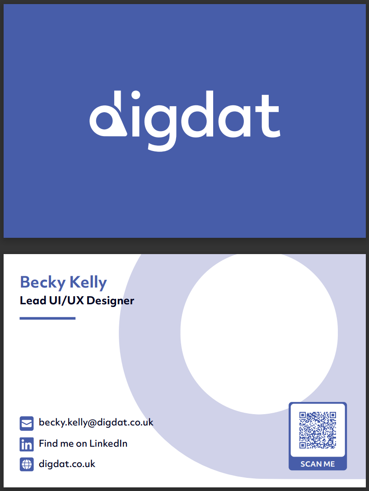
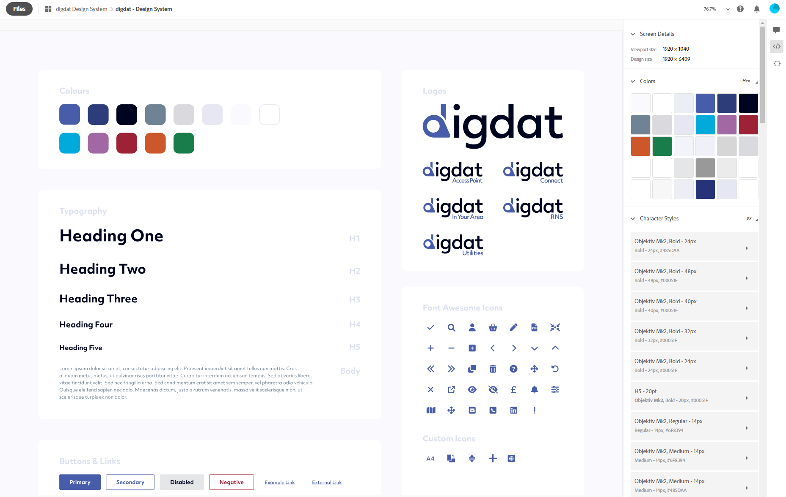
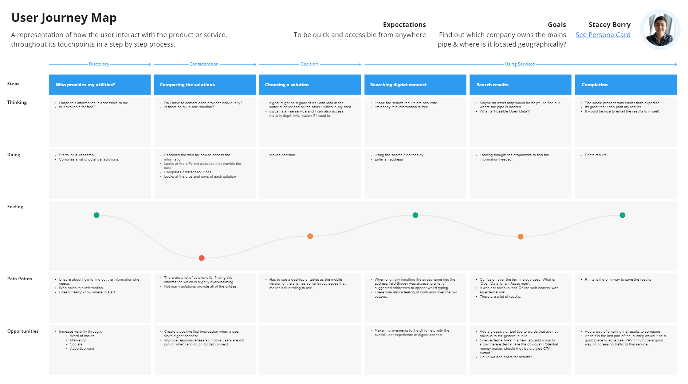
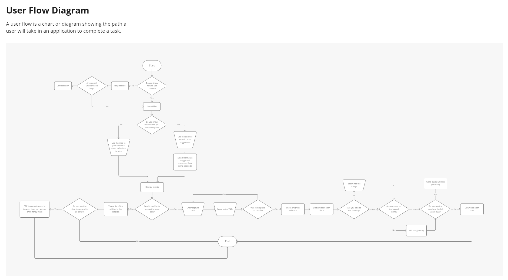
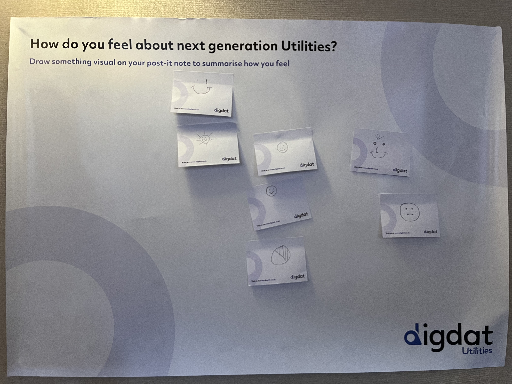
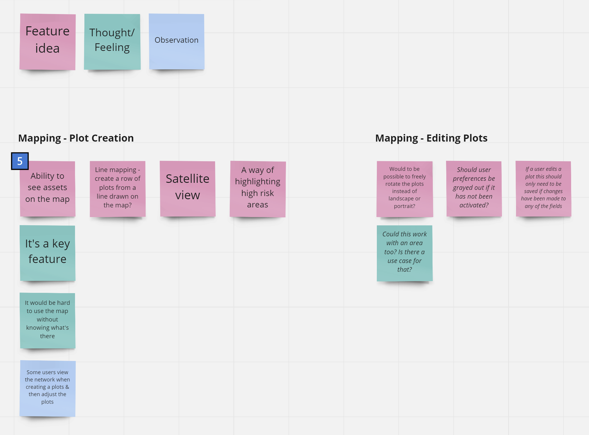
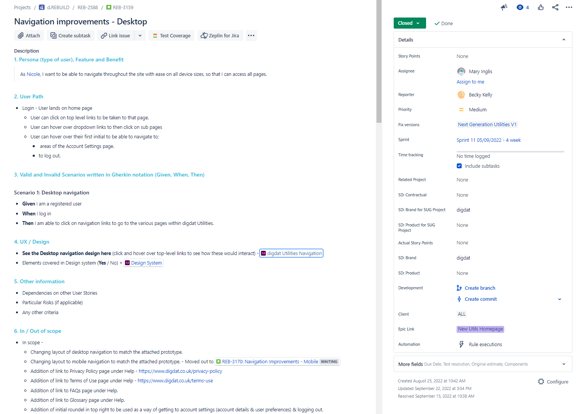
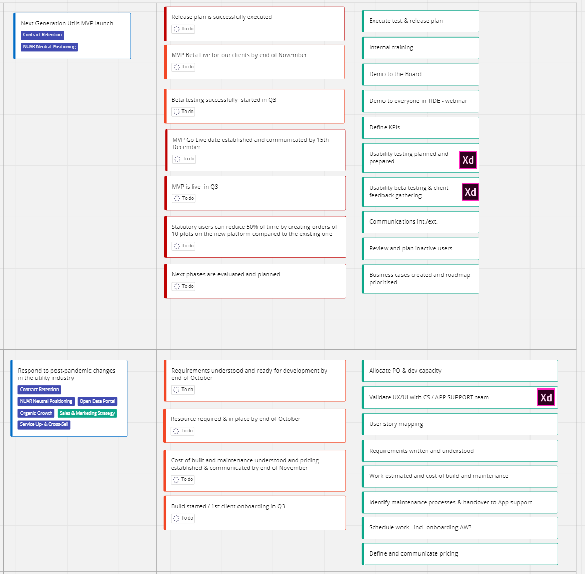

Objective - Continue to improve various digdat products, as well as assisting to design & develop new features.
I've created lots of different types of print & digital collateral whilst working with the digdat brand over the years. An example of a recent business card I created using Adobe InDesign is shown below.
On this particular design, I also came up with the idea to add a custom QR code to enable us to point users to our digital brochure to save on printing costs, and so we had the ability to track via GA how many people had scanned it, and from what device etc.


I collaborated with our other designer to create a fully established design system for the brand and it's various products. We use Glyph's to show font awesome icons so that it is easier for both us and software developers to implement icons within digdat user interfaces.
When joining the digdat team, they had a couple of personas but they were incomplete and not an accurate representation of the real various digdat service users. I held a number of meetings with different business stakeholders to gather more findings on the various user types. I also had virtual demo meetings with some of our users and interacted with them during user group events which helped me to gain a better understanding of the user base. I built up each persona card and ran a workshop to ensure they really represented our needs.
Once fully understanding each personas needs, goals, pain points & typical actions, I went on to create User Flow visuals. Each User Flow defined the steps for a certain journey which a user would carry out. These visuals have been very useful when onboarding new members of the team, to help them have a deep understanding of not only our user base, but also the various routes which can be taken across the website.


Once fully understanding each personas needs, goals, pain points & typical actions, I went on to create User Flow visuals. Each User Flow defined the steps for a certain journey which a user would carry out. These visuals have been very useful when onboarding new members of the team, to help them have a deep understanding of not only our user base, but also the various routes which can be taken across the website.
I have attended various User Groups for the digdat brand, in which I present various design concepts and facilitate interactive, engaging feedback sessions to ensure that we gather the most observations as possible from our attending clients.
I also use various tools to gather feedback and validate UI/UX decisions, one of these being UseBerry. This is a tool in which I can set up step-by-step remote usability tests to help gain more qualitative data along side using HotJar, GA, Interviewing, Card sorting and many more methods.

I collated all the feedback gathered during the user group and user interviews by creating an affinity diagram. I used this method as it helped me to generate, organize, and consolidate the information related to the digdat product.


Shown is an example of a User Story I have written out for the team to amigo. It includes the full User Story sentance with persona, feature & benefit outlined, as well as user paths & scenarios clearly defined. I also always ensure that all User Stories have an attached Adobe xd prototype to be used as a visual aid in discussions, whilst developing and testing the end product.

On the digdatm, I have recently started working with Product Owners to help influence and define quarterly OKR's based on user feedback gathered in various forms (HotJar, User Groups, Interviews, Usability testing etc).
I frequently create, and amend interactive prototypes that I tend to build using Adobe xd. These prototypes are so valuable and useful for everyone involved, as they are used as a proof of concept for what we plan to build. They offer a visual guide for the developers to use while implementing user interfaces, as well as a way of demoing ideas to stakeholders, using for scenario based usability sessions and much more. An example is shown below.